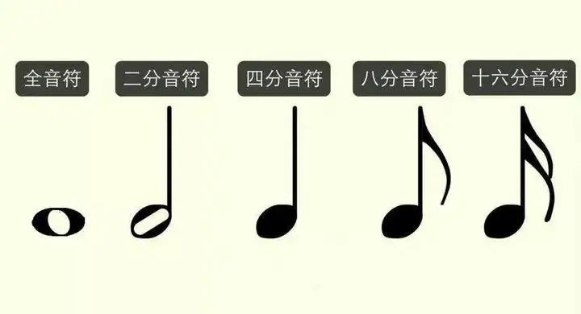
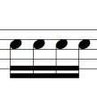

音符是用来记录不同长短的音的进行符号。全音符、二分音符、四分音符、八分音符、十六分音符是最常见的音符。是五线谱中最重要的元素。上述音符的形状，以及在4/4拍（以四分音符为一拍，每小节四拍）的乐曲中的拍数如下图和下表所示。

| 音符名称 | 全音符 | 二分音符 | 四分音符 | 八分音符 | 十六音符 |
| 拍数（4/4） | 四拍 | 二拍 | 一拍 | 二分之一拍 | 四分之一拍 |
音符包括三个组成部分。符头（空心的或实心的椭圆形标记）、符干（垂直的短线）和符尾（连在符干一端的旗状标记）。除上述音符外，常见音符还有三十二分音符、六十四分音符等。三十二分音符如图所示：
音符的符头可以记在五线谱的线上与间内。符头在五线谱上的位置愈高音愈高，反之音符符头的位置愈低音也愈低。用音符干记谱，符头在第三线以上时，符干朝下，写在符头的左边；在第三线以下时，符干朝上，写在符头的右边。符头在第三线上，符干朝上朝下都可以，根据邻近的符干方向而定。符尾永远写在符干的右边。
许多音符组成一组时，用共同的符尾（符杠）相连。两条以上的符杠要平行。如图所示：
